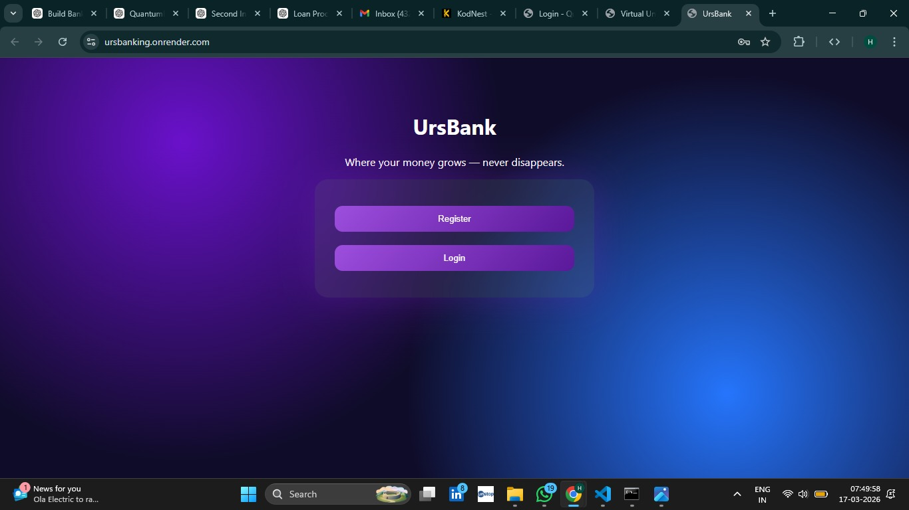
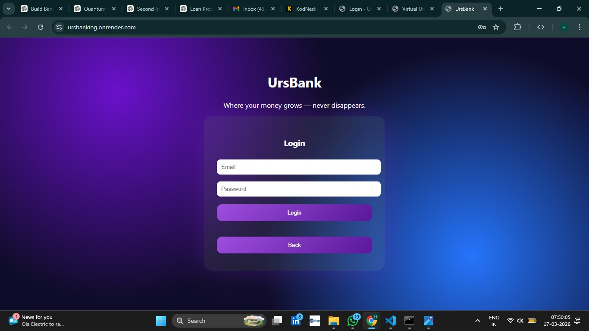
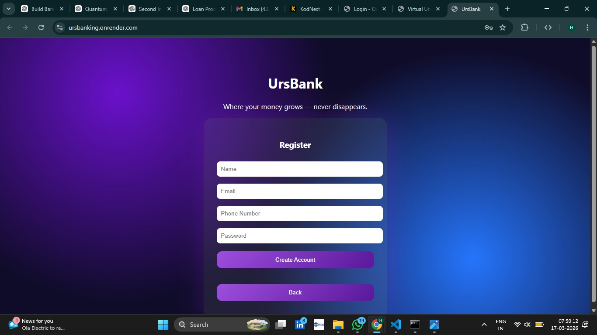
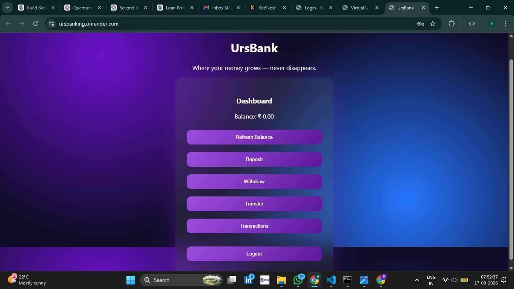
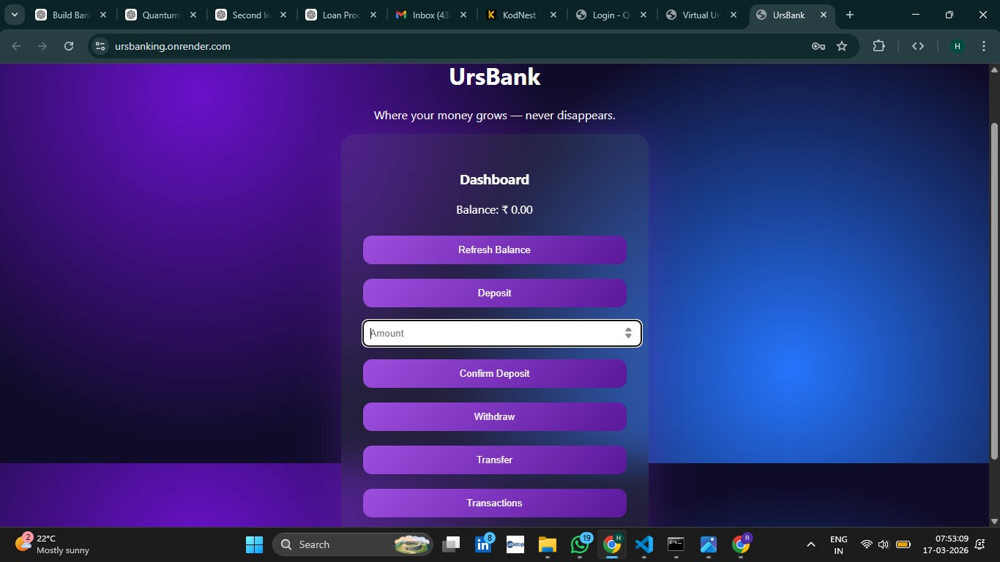
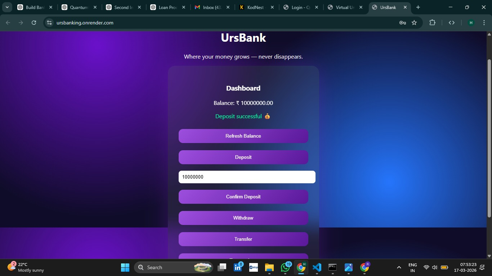
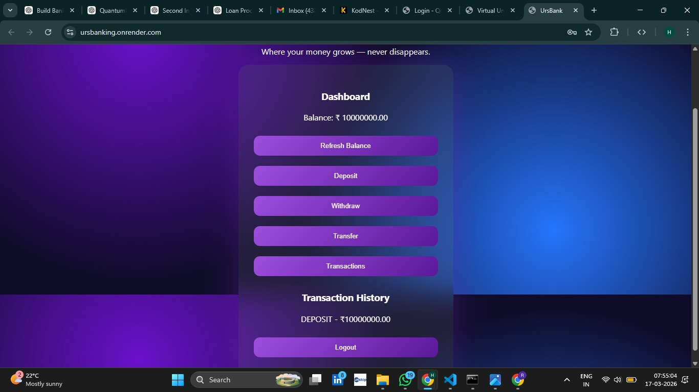
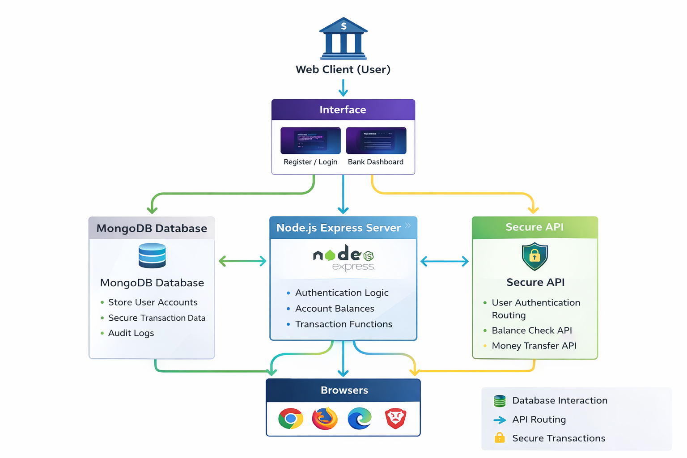

Secure Digital Banking Platform for Account Management & Transactions
Source CodeUrsBank is a mini banking web application that allows users to register, log in, and perform banking operations such as deposit, withdrawal, and fund transfer.
The system demonstrates secure authentication, transaction handling, and real-time balance updates using modern web technologies.
View Project READMEComplete backend, frontend, and database logic of the banking system is available in the GitHub repository.
Open RepositoryTraditional banking systems require secure infrastructure for handling transactions and user data.
This project demonstrates how a simplified banking system can be built to manage accounts, perform transactions, and maintain records securely.




Step 1: Enter amount and initiate deposit

Step 2: Deposit successful and balance updated



The UrsBank system successfully demonstrates a functional banking application with secure authentication and real-time transaction handling.
Users can register, log in, deposit money, transfer funds, and view transaction history through an intuitive interface.
This project highlights key concepts of backend integration, database management, and secure financial operations.